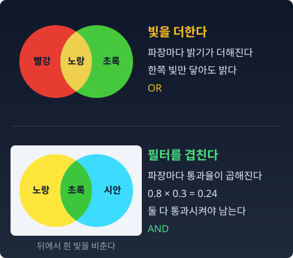

길
거리를 재는 자는 하나가 아니다. 그렇다면 두 점 사이를 "걸어가는 방법"은 하나인가?
유클리드 공간이라면 답은 간단하다. 두 점 사이의 곧은 길은 하나다. 확률분포 둘 사이에서도 그럴까? 분류 모델 두 개의 예측을 하나로 합쳐 본 사람이라면, 합치는 방법이 하나가 아니라는 것부터 이미 알고 있다.
조합 규칙: 섞을 것인가, 곱할 것인가
모델 A와 모델 B가 있다. 둘 다 쓸 만하다. 합쳐서 더 좋은 모델을 만들 수 있을까?
첫째 방법은 섞기(앙상블)다. “60%의 확률로 A의 예측을 따르고, 40%의 확률로 B를 따르자.” 두 모델이 공존한다. 어느 쪽도 사라지지 않는다.
둘째 방법은 곱하기다. “A도 B도 그럴듯하다고 한 곳에 무게를 몰아주자.” 결과마다 두 모델이 준 확률을 곱한 뒤, 곱한 값들의 합이 1이 되도록 전체를 같은 수로 나눈다. 이렇게 합을 1로 맞추는 일을 정규화라고 한다. 한쪽이라도 거의 0을 준 결과는 곱해도 거의 0이니, 두 모델이 함께 인정하는 곳만 살아남는다. 새 증거를 받아 믿음을 고치는 계산(베이즈 갱신)도 이렇게 곱하고 다시 나누는 셈이다.
섞으면 OR, 곱하면 AND다. 어느 한쪽만 그렇다고 해도 남는가, 둘 다 그렇다고 해야 남는가. 같은 두 모델에서 출발해도 이 규칙에 따라 결과가 달라지고, 두 규칙은 두 분포 사이에 저마다 다른 길을 낸다.
빛은 더하고 필터는 곱한다
두 규칙이 정말 다른 결과를 내는지는 눈으로 보는 편이 빠르다. 왜 하필 색인가? 색은 파장별 밝기의 분포다. 빨간 빛은 긴 파장 쪽이 높은 분포, 파란 빛은 짧은 파장 쪽이 높은 분포다. "색을 섞는다"는 곧 "분포를 섞는다"이고, 색을 섞는 규칙은 이미 두 가지가 있다.

빛을 섞을 때는 더한다(가산혼합). 빨강 빛과 초록 빛을 한곳에 비추면 노랑, 세 빛을 모두 비추면 흰색이 된다. 파장마다 밝기가 더해지므로 비출수록 밝아진다. 어느 한 빛만 닿아도 그 파장은 밝다. 두 빛이 공존하는 세계, 아무것도 사라지지 않는 OR이다.
필터를 겹칠 때는 곱한다(감산혼합). 물감이나 셀로판은 특정 파장을 흡수하는 필터다. 노랑 셀로판과 시안 셀로판을 겹쳐 흰 빛에 비추면 초록만 나온다. 필터 한 장은 파장마다 빛을 일정 비율만 통과시키고, 두 장을 겹치면 파장마다 그 비율이 곱해진다. 어느 한 파장에서 한 장이 80%, 다른 한 장이 30%를 통과시키면 겹친 곳에서는 0.8 × 0.3 = 0.24, 곧 24%만 나온다. 두 필터가 모두 통과시키는 파장만 살아남는 AND다.
같은 두 색에서 출발하는데, 합치는 규칙이 다르면 결과가 다르다. 빛은 더하고, 필터는 곱한다.
하나 조심할 것이 있다. 모니터의 RGB 값 (R, G, B)는 그대로는 확률분포가 아니다. 세 값의 합이 1이 아니고, 밝기가 섞여 있다. 세 값을 합으로 나눈 색도 좌표 (R, G, B) / (R + G + B)가 합이 1인 세 숫자, 곧 심플렉스(합이 1인 숫자들이 사는 삼각형) 위의 점이다. 색도 삼각형은 밝기를 빼고 "어떤 색인가"만 남긴 심플렉스다.
확률로의 번역
색이 파장별 밝기의 분포였듯, 확률분포는 사건별 가능성의 분포다. 구조가 같으니 섞는 규칙도 그대로 옮겨진다.
이 책에서 p는 현실, q는 모형이다. 이 장의 두 끝점은 현실도 모형도 아닌 그냥 두 분포이니, a와 b라고 부르자. 결과 i에 a는 ai, b는 bi의 확률을 준다. t는 0에서 1까지 움직이는 비율이다. 섞는 규칙은 결과마다 두 확률을 1 − t : t로 가중평균하는 것이다.
섞는 규칙은 두 분포의 가중평균이다. 한쪽에만 있던 봉우리도 다 살아남는다. 빛이 밝아지듯, OR이다.
곱하는 쪽도 결과마다 두 확률을 1 − t : t의 비율로 거듭제곱해 곱하면 길을 낼 수 있다. 다만 곱한 값들은 합이 1이 아니어서 정규화가 한 번 더 필요하다. 그 길의 식은 곱셈의 길을 따로 걸어 볼 때 쓴다.
덧셈 쪽을 m-길, 곱셈 쪽을 e-길이라 부른다. m은 mixture(혼합), e는 exponential(지수)의 머리글자다. 곱셈 쪽이 왜 「지수」인지는 그 길을 걸어 보면 드러난다. m-길은 이 책에서 붉은색, e-길은 푸른색으로 칠한다.
m-길: 덧셈으로 걷기
“공정한 동전과 기운 동전의 '사이’에 있는 동전은 뭔가?”
공정한 동전 (0.5, 0.5)와 앞면이 90% 나오는 동전 (0.9, 0.1)이 있다. 주머니에 두 동전을 넣고, 확률 t로 기운 동전을, 1 − t로 공정한 동전을 꺼내 던진다고 하자. 앞면이 나올 확률은 (1 − t) × 0.5 + t × 0.9다. t를 0에서 1로 밀면 이 확률은 0.5에서 0.9까지 고르게 움직인다.
t를 0.3에서 0.31로, 다시 0.311로 조금씩 바꾸면 그 사이에는 동전이 몇 개나 있을까? 칵테일을 섞어 본 사람은 안다. 진토닉과 마티니를 1 − t : t로 따르면 비율을 바꿀 때마다 새 음료가 나오고, 그 사이에는 끝없이 많은 음료가 있다. 그래도 원재료는 두 가지 그대로이고 비율만 변한다. 어느 잔에서도 진토닉 맛과 마티니 맛은 각자 살아 있다. m-길 위의 동전도 그렇다. 어느 t에서나 주머니 속에는 두 동전이 그대로 있고, 꺼낼 비율만 바뀐다.
결과가 셋이면 분포는 색도 삼각형 같은 심플렉스 위의 점이다. m-길 위의 점은 두 끝점을 잇는 선분 위를 같은 빠르기로 걷는다. 각 칸(결과 하나하나)의 확률이 t에 대해 일차식이기 때문이다. 확률 자체가 좌표인 지도에서 이 길은 곧은 선이다.
파이썬
import numpy as np
a = np.array([0.5, 0.5]) # 공정한 동전 (앞, 뒤)
b = np.array([0.9, 0.1]) # 기운 동전
for t in [0, 0.25, 0.5, 0.75, 1]:
m = (1 - t) * a + t * b # 덧셈의 길 (혼합)
print(f"t={t:.2f} 앞면 {m[0]:.2f} 뒷면 {m[1]:.2f} 합 {m.sum():.2f}")
# t=0.00 앞면 0.50 뒷면 0.50 합 1.00
# t=0.25 앞면 0.60 뒷면 0.40 합 1.00
# t=0.50 앞면 0.70 뒷면 0.30 합 1.00
# t=0.75 앞면 0.80 뒷면 0.20 합 1.00
# t=1.00 앞면 0.90 뒷면 0.10 합 1.00
덧셈의 길은 정규화가 필요 없다. 합이 1인 것 둘을 가중평균하면 합은 저절로 1이다.
수확
“조합에는 두 규칙이 있다. OR과 AND. 이것이 두 개의 길을 만드는 뿌리다.”
“확률을 더하면, 확률 좌표에서 곧은 길이 된다.”
문제 1. 골라 던지기와 함께 던지기
동전 A는 앞면이 나올 확률이 0.7, 동전 B는 0.8이다. (가) 동전 하나를 반반의 확률로 골라 던진다. 앞면이 나올 확률은? (나) 이번에는 두 동전을 함께 던져, 두 면이 같게 나온 판만 적고 다르게 나온 판은 버린다. 적어 둔 판 가운데 앞면-앞면인 판의 비율은? (다) (가)와 (나) 가운데 어느 셈이 OR이고 어느 셈이 AND인가? (나)의 셈을 「곱한 뒤 다시 나눈다」로 설명하라.
함께 풀기

(가)는 0.7이랑 0.8의 평균이니까 0.75요. (나)는 둘 다 앞면일 확률이니까 0.7 × 0.8 = 0.56이에요.

0.56이면 (가)보다 작네. 난 (나)도 0.7과 0.8 사이 어딘가일 줄 알았어. 두 동전 다 70~80%짜리니까 어떻게 합쳐도 그 사이에서 나와야 할 것 같아서.

두 사람 답을 같이 봐요. 적어 둔 판은 어떤 판들이에요?

앞면-앞면이거나 뒷면-뒷면인 판이요. 뒷면-뒷면은 0.3 × 0.2 = 0.06이고… 아, 버린 판까지 분모에 넣었어요. 적어 둔 판만 따지면 0.56 / (0.56 + 0.06) = 0.903이에요.

0.9를 넘어요. 두 동전 다 0.8 이하인데요.
서연 학생이 「그 사이에 있어야 한다」고 한 건 어떤 셈에서 맞는 말이에요?

섞을 때요. 섞는 건 두 확률을 무게 매겨 평균 내는 거라 두 값 사이를 못 벗어나요. (나)는 평균이 아니에요. 결과마다 곱한 뒤, 남은 판끼리 합이 1이 되게 다시 나눈 거예요. 뒷면 쪽 0.3과 0.2는 곱하면 0.06으로 더 작아지니까, 다시 나누면 앞면 쪽이 두 동전 어느 쪽보다도 커져요.
그럼 (다)는 (가)가 OR, (나)가 AND네요. (가)는 고른 동전 하나만 앞면을 좋아해도 앞면이 나오고, (나)는 두 동전이 같은 면을 내야 남으니까요.
하나만 더 해 봐요. A가 공정한 동전 0.5라면 (나)는 얼마예요?
0.5 × 0.8 / (0.5 × 0.8 + 0.5 × 0.2) = 0.8이요. B 혼자일 때랑 똑같아요.
어느 면도 편들지 않는 동전과는 곱해도 B의 의견이 그대로 남네요. 확률 수업에서 P(앞면 | 두 면이 같다)를 구한 거랑 같아요. 조건을 걸고 조건에 맞는 경우끼리 다시 나눈 거였어요.
문제 2. m-길을 어디까지 늘릴 수 있나
공정한 동전 (0.5, 0.5)와 기운 동전 (0.9, 0.1)의 m-길에서 앞면 확률은 (1 − t) × 0.5 + t × 0.9다. 이 식은 t가 0과 1 사이가 아니어도 계산된다. (가) t = 1.2와 t = −1에서 앞면·뒷면 확률을 구하라. (나) m-길 위의 점이 확률분포로 남는 t의 범위를 구하라. (다) 결과가 셋인 a = (0.6, 0.3, 0.1), b = (0.1, 0.2, 0.7)이면 그 범위는 어떻게 되는가? 범위의 양 끝에서 m-길은 심플렉스 삼각형의 어디에 닿는가?
함께 풀기
(가)는 넣기만 하면 돼요. t = 1.2면 앞면 0.98, 뒷면 0.02. t = −1이면 앞면 0.1, 뒷면 0.9예요. 두 경우 다 합이 1이니까, t를 얼마로 늘려도 확률분포 같아요.
t = 1.5면요?
앞면 1.1, 뒷면 −0.1… 합은 1인데 뒷면이 음수네요. 합만 보고 부호를 안 봤어요.
칸마다 0 이상이어야 하니까 뒷면 0.5 − 0.4t ≥ 0에서 t ≤ 1.25, 앞면 0.5 + 0.4t ≥ 0에서 t ≥ −1.25예요. (나)는 −1.25 ≤ t ≤ 1.25고요. (다)도 양쪽으로 똑같이 늘릴 수 있을 것 같아요. 길이 곧으니까요.
칸이 셋이면 칸마다 언제 0이 되는지 따로 봐야겠죠. 칸 1부터 해 볼까요?
칸 1은 0.6 − 0.5t, 칸 2는 0.3 − 0.1t, 칸 3은 0.1 + 0.6t예요. 칸 1은 t = 1.2에서, 칸 3은 t = −1/6에서 0이 되고, 칸 2는 t = 3까지 버텨요. 그러니까 −1/6 ≤ t ≤ 1.2예요.

대칭이 아니네요. 동전은 두 칸이 같은 빠르기로 반대로 움직여서 대칭이었던 거예요. 여기서는 칸 3이 a 쪽에서 0.1로 작은데 b 쪽으로 가며 빠르게 커지니까, 거꾸로 가면 금방 0에 닿아요.
t = 1.2면 (0, 0.18, 0.82), t = −1/6이면 (0.683, 0.317, 0)이에요. 한 칸이 0이니까 둘 다 삼각형의 변 위예요. 그 너머로 가면 음수인 칸이 생기고요.
그래요. m-길은 확률 좌표에서 곧은 선이라, 선분을 늘이면 언젠가 삼각형의 변을 뚫고 나가요. 어느 변에서 먼저 나가는지는 어느 칸이 먼저 0이 되느냐가 정하고요.
해석 기하에서 직선이 볼록한 영역 안에 머무는 구간을 구할 때, 부등식을 변마다 하나씩 세우고 가장 좁은 것을 고르던 거랑 같네요.
문제 3. 두 분류기의 앙상블
분류 모델이 한 예제에서 받는 손실(loss)을 정답에 준 확률 p의 −ln p로 잰다고 하자. 모델 A는 이미지 1의 정답에 0.9, 이미지 2의 정답에 0.1의 확률을 준다. 모델 B는 반대로 이미지 1에 0.1, 이미지 2에 0.9를 준다. (가) 두 모델 각각의 평균 손실은? (나) 두 모델의 확률표를 반반 섞은 앙상블의 평균 손실은? (다) 한 이미지에서, 섞은 앙상블의 손실은 두 모델 가운데 나은 쪽의 손실보다 많아야 얼마나 클 수 있는가?
함께 풀기
(가)는 둘 다 (0.105 + 2.303)/2 = 1.204예요. (나)는 반반 섞었으니까 손실도 반반, 똑같이 1.204일 것 같아요.
섞은 앙상블이 이미지 1의 정답에 주는 확률은 얼마예요?
0.9와 0.1의 평균, 0.5요. 손실은 −ln 0.5 = 0.693… 1.204보다 훨씬 작네요. 확률을 섞은 건데 손실을 섞어 버렸어요. 이미지 2도 0.5라서 평균 손실은 0.693이에요.

아까 골라 던지기랑 같아요. 섞은 앙상블은 반반 확률로 모델 하나를 골라 대답하게 하는 셈이니까, 한 모델만 맞혀도 정답 확률이 절반은 남아요. OR이에요.
그럼 앙상블은 이미지마다 두 모델을 다 이기는 거예요? 평균에서는 둘 다 이겼으니까요.
이미지 1에서 A의 손실은요?
0.105요. 앙상블은 0.693이니까 이미지 1에서는 A한테 져요. 섞은 확률 0.5는 0.9를 넘을 수 없으니까요. 두 수의 평균은 큰 쪽을 넘지 못해요.
그럼 얼마나 질 수 있어요? (다)예요.
두 확률 가운데 큰 쪽을 p, 작은 쪽을 q라 하면 평균 (p + q)/2는 적어도 p/2예요. 그러면 손실은 많아야 −ln(p/2) = −ln p + ln 2예요. 나은 쪽보다 ln 2 = 0.693 넘게 나빠질 수는 없어요. 이미지 1에서도 0.693 − 0.105 = 0.588이라 그 안이에요.
그래요. 섞기는 한 예제에서 가장 잘한 모델을 이기지는 못하지만 크게 지지도 않아요. 잘하는 모델이 예제마다 다르면 평균에서는 둘 다 이길 수 있고요.
팀 과제 발표자를 제비뽑기로 정하는 거랑 같네요. 누가 뽑혀도 아는 사람이 절반은 나오니까 아주 망하지는 않는데, 가장 잘하는 사람이 늘 나가는 것보다는 못해요.